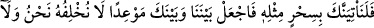
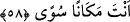
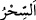

görmek ve onun imkânsız bir iş olduğunu iddiâ etmek içindir. “Gelmek”ten maksad ya
gerçekten gelmek ya da bir işe yönelmek ve girişmektir.
“ aslı olmayan, hokkabazların el çabukluğu ile göz boyamaları gibi aldatma ve
kandırmadır, asılsız hayallerdir. Nitekim kovucu kimse de dil çabukluğu ile bazı lâfları
gizleyip bazılarını ilâve ederek lâf getirip götürürler.
Âyetin mânâsı şöyledir: Ey Mûsâ! Bir müddet kaybolup saklandığın yerden,
gösterdiğin sihrin gücüyle bizi Mısırdan çıkarmak için mi geri döndün? Bu, imkânsızı
yapmaya çalışmak olduğu için akıllı birisinin yapacağı bir şey değildir.
Kâşifî der ki: Yâni “(Fir’avn) bildik ki sen bir sihirbazsın; sihir ile bizi Mısır’dan
çıkarmak, İsrâiloğulları’nı yerleştirmek ve onlara pâdişah olmak istiyorsun, dedi.”
Bâzı âlimler der ki: “Fir’avn’un bu sözleri, inanmamasının sebebini ve şaşkınlığını
göstermektedir. Yine onun Mûsâ (a.s.)’ın hak peygamber olduğunu bildiğine delildir.
Onun içindir ki Fir’avn mülkünün elinden gitmesinden korkmuştur. Çünkü bir sihirbaz
onun gibi bir kralı ülkesinden çıkarmaya güç yetiremez.
el-İrşâd’da şöyle der: “Fir’avn Mûsâ (a.s.)’ ın amacının sadece İsrâiloğulları’nı
kurtarmak olmadığını, bilakis bütün Kıptîleri Mısır’dan çıkarmak olduğunu belirterek,
kavminin buğzunu artırmak istemiştir. Böylece mal ve mülklerinin tamamen elden
çıkması korkusu ile kimsenin Mûsâ (a.s.)’a tâbi olmamasını, ona karşı şiddetle karşı
koymalarını sağlamak istemiştir. Onları Mûsâ (a.s.)’a karşı koymaya cesaretlendirmek
için de kendisine gösterdiği eşsiz mûcizelere de ‘sihir’ demiştir.
et-Te’vilatü’n-Necmiyye’de şöyle der: “Fir’avn basîret ehlinden değil basar ehlinden
olduğu için bu sözü söylemiştir. Eğer basîret ehlinden olsaydı Mûsâ (a.s.)’ın kendisini
zulmetten nûra, beşeriyyetin karanlığından rûhâniyyetin nûruna, insâniyyetin
karanlığından rabbanîliğin nûruna çıkarmak için geldiğini bilirdi.”
Mesnevî de şöyle geçer:
Kim Hakk’ın cemâlinden nasîbini alırsa
Bu cihan onun gözünde murdar olur
Sen de Edhem gibi mülkü hemen terk et de
Onun gibi ebedî bir saltanata eriş!
His gözü ile mûcizeyi sihir olarak görünce onun benzerini getireceğini iddiâ ederek
şöyle dedi:
58. Öyle ise, muhakkak sûrette biz de sana, aynen onun gibi bir büyü getireceğiz.